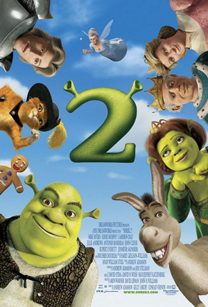
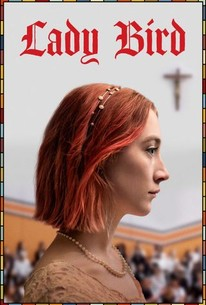
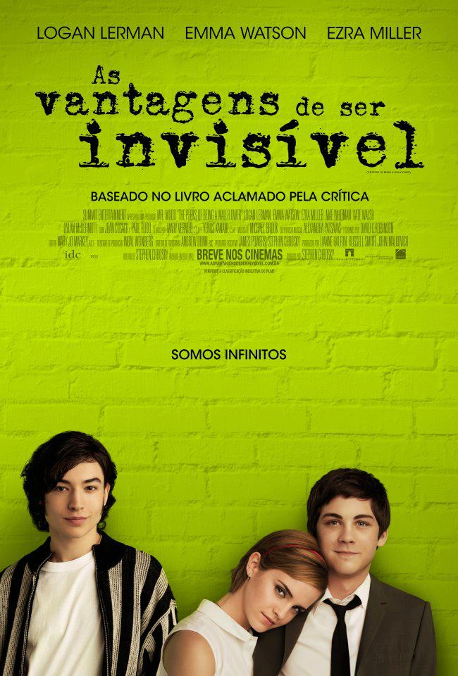
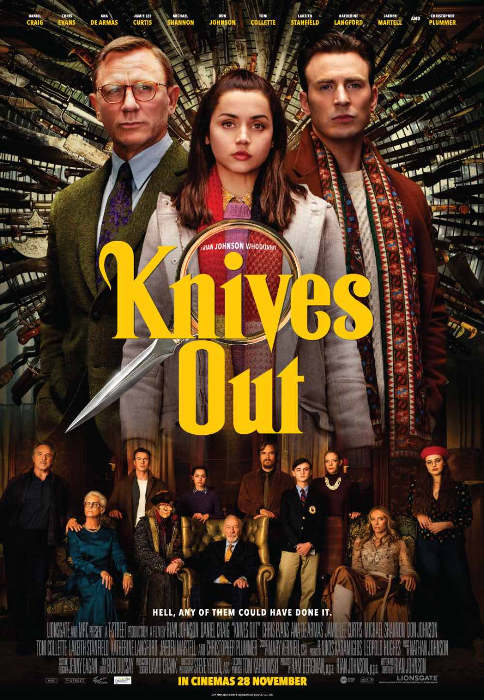

O Grande Hotel Budapeste
 Na década de 1930, o gerente de um famoso hotel europeu torna-se muito amigo de um jovem companheiro de trabalho. Os dois acabam se envolvendo no roubo de um famoso quadro de valor inestimável e na batalha por uma fortuna de família. O filme mostra as mudanças históricas na Europa que ocorreram durante os anos 20.
Na década de 1930, o gerente de um famoso hotel europeu torna-se muito amigo de um jovem companheiro de trabalho. Os dois acabam se envolvendo no roubo de um famoso quadro de valor inestimável e na batalha por uma fortuna de família. O filme mostra as mudanças históricas na Europa que ocorreram durante os anos 20.
Shrek 2
 Após se casar com a Princesa Fiona (Cameron Diaz), Shrek (Mike Myers) vive feliz em seu pântano. Ao retornar de sua lua-de-mel Fiona recebe uma carta de seus pais, que não sabem que ela agora é um ogro, convidando-a para um jantar juntamente com seu grande amor, na intenção de conhecê-lo. A muito custo Fiona consegue convencer Shrek a ir visitá-los, tendo ainda a companhia do Burro (Eddie Murphy). Porém os problemas começam quando os pais de Fiona descobrem que ela não se casou com o Príncipe (Rupert Everett), a quem havia sido prometida, e enviam o Gato de Botas (Antonio Banderas) para separá-los.
Ladybird
Christine McPherson está no último ano do colégio e o que mais deseja é fazer faculdade longe de Sacramento, Califórnia, ideia rejeitada por sua mãe. Lady Bird, como a garota de forte personalidade exige ser chamada, não se dá por vencida e leva o plano de ir embora adiante mesmo assim. Enquanto a hora não chega, ela se divide entre as obrigações estudantis no colégio católico, o primeiro namoro, típicos rituais de passagem para a vida adulta e inúmeros desentendimentos com a progenitora.
As Vantagens de Ser Invisivel
Um jovem tímido se esconde em seu próprio mundo até conhecer dois irmãos que o ajudam a viver novas experiências. Embora esteja feliz nessa nova fase, ele não esquece as tristezas do passado, que têm origem em uma chocante revelação.
Knives Out
Depois de fazer 85 anos, Harlan Thrombey, um famoso escritor de histórias policiais, é encontrado morto. Contratado para investigar o caso, o detetive Benoit Blanc descobre que, entre os funcionários misteriosos e a família conflituosa de Harlan, todos podem ser considerados suspeitos do crime.